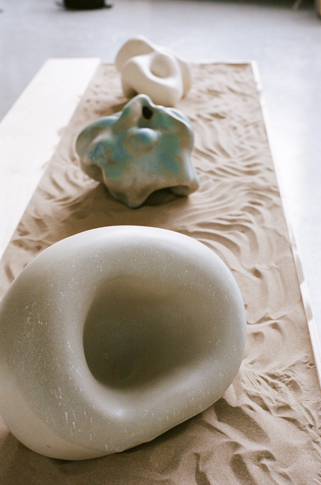

June 2019
NCAD
'if i was part of you' was designed to focus attention to your senses, specifically touch and hearing. The forms are to be touched and listened to; the surfaces are smooth and the internal spaces create echoes. The aim is to achieve an experience of heightened sensory perception; being in one’s own body, and at the same time being in the external world.
'if i was your ear II' (foreground) and 'if i was your face' (background) sandbox installation.

'if your head was here' (foreground), 'if i was your face' (middleground) and 'if i was your ear II' (background).
Sandbox installation with 'if i was your ear II' (foreground), 'if i was your face' (middleground) and 'if your head was here' (background). Low plinth with 'each ear either end' (left) and 'if i was your other ear' (right).
'if i was your face' in sandbox.
'if i was part of you' installation.